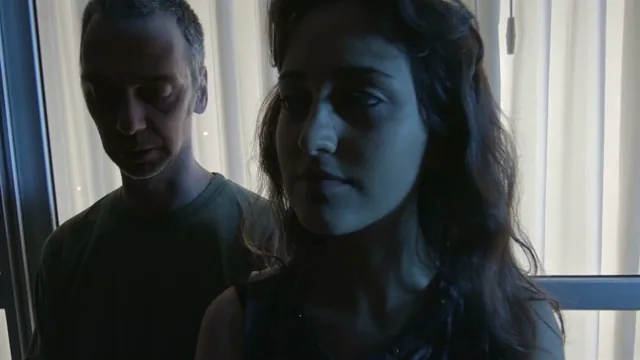
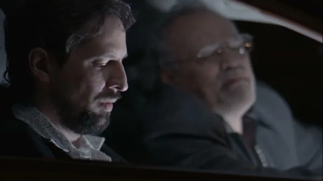
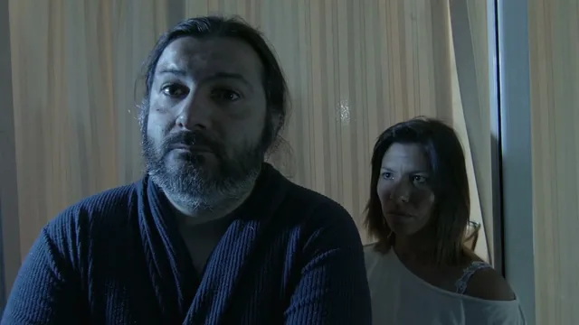

Cortometraje independiente · 2015
Blanco
Fotografía, edición y postproducción: Julián Sequeira.

El film
Tres historias, tres parejas. Un cortometraje independiente dirigido por Federico Font, con fotografía, edición y postproducción de Julián Sequeira.
Ver Blanco Ver el póster completo Ver en YouTube (se abre en otra pestaña)
Tres historias
Ampliar: 
Blanco — Fotograma del film, 05:10. Ampliar: 
Blanco — Fotograma del film, 11:10. Ampliar: 
Blanco — Fotograma del film, 13:20.


Créditos del film
- Dirección
- Federico Font
- Guion
- Federico Font y Nacho Gagliano
- Fotografía, edición y postproducción
- Julián Sequeira
- Producción
- Federico Font y Julián del Greco
- Elenco
- Eduardo Misch, Mora Escola, Fernando Areso, Daniela Font, Fernando Dominguez, Jose Maria Mecozzi y Horacio Fortunato
- Voz
- Paula Maffia